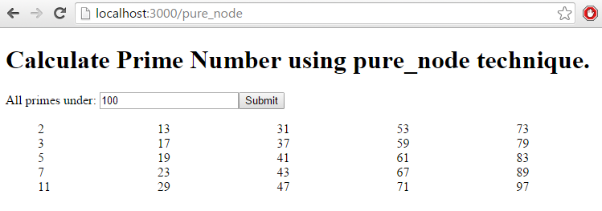
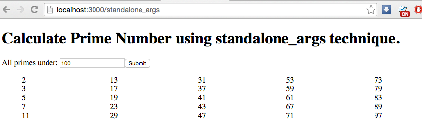

Note: This appendix is largely taken from a series of blog posts on the author's website, blog.scottfrees.com, which covers the various ways one might choose to integrate an existing, legacy C/C++ program into a Node.js web app. The series is standalone from this book, and as such, you might find some of this material to be redundant, however it illustrates a real world example of integrating legacy C++ code as opposed to the narrowly scoped examples in the book. The section also has a different github repository to download the code from than the other examples throughout this book. It is highly recommended that you do grab the code, as there is a lot of it that is not presented in the text!
This book has focused 100% on Node.js C++ addons as the method of choice for integrating Node.js and C++. In many cases, addons are indeed the best alternative for doing this sort of integration, however there are other options - and this book would be incomplete without discussing them. Before doing so, let's take a step back and re-ask the question asked way back in Chapter 1: Why integrate Node.js and C++? To sharpen the discussion, let's look at this from the perspective of having an existing C++/C program that you wish to get onto the web.
Can't I just write a C++ web site?
Well... yes - you could! People have been writing parts of web applications in C++ for a very long time - using CGI. CGI isn't the most popular thing on the web these days though, it lacks a lot of productivity enhancements that makes web development so great today. More importantly, it introduces some significant performance and scalability issues. On the other hand, C++ has come a long way over the past few years in terms of expressiveness, and the C++14 standard has enabled a some really cool projects focused on writing modern MVC-styled web apps in pure C++. If that's your thing, check out Silicon.
The majority of web developers aren't C++ programmers, and frankly, unless ultra high performance from your web tier is critical, you are probably better off using languages providing a higher level of abstraction. The common players on the web being Ruby, Go, Node.js, Python, PHP along with many more...
Why Node.js?
Node.js has a number of advantages. For one, it integrates really nicely with C++ in several different ways - one of which of course we've seen throughout this book! In general, Node.js also has a lot of benefits that dovetail with why you'd be using C++ in the first place - it's highly portable, it promotes performance at scale, and has a thriving ecosystem.
Why not just rewrite the C++?
Ah... every developer's first instinct - "Let's rewrite this old code written in language X because language Y is so much cooler | better | faster | easier!". First off - if you have some legacy C++ code that is simple, small, and doesn't really need to be high performance - this might very well be the best answer. However, if you are in that category, you probably aren't reading this - you're likely almost done rewriting your C++ code.
There are a few practical reasons not to rewrite code. First, you might not have the code! Believe it or not, if you are working for a company that uses legacy tools to support their business, source code for these tools are often lost to time. A derivative of this is when your legacy code uses third-party dependencies, which cannot be rewritten or modified.
Second, C/C++ can be complex - and if it's old, it might be really hard to decipher. Are you a web developer that is also a C++ guru? Are you positive you can completely recreate the precise inputs/outputs of this program? If it's a critical line of business tool, you are putting a ton of risk on your plate.
The third reason not to rewrite your C++ is because it might really want to be in C++! While Node.js has decent performance, it's simply not C/C++. If your application has extreme performance criteria, you aren't going to beat C++.
There are three general ways of integrating C++ code with a Node.js application - although there are lots of variations within each category:
Each of these options have their advantages and disadvantages, they primarily differ in the degree in which you need to modify your C++, the performance hit you are willing to take when calling C++, and your familiarity / comfort in dealing with Node.js and the V8 API.
The most obvious question to ask first is do you have access to the C++ source, or just the binary? Without source code, you need to hope the C++ program is either a command line program or a dll/lib shared library. If you are looking at a program written with only a graphical user interface… well then you are in a world of pain. Its likely you are going to need to rewrite your application in order to make it work on the web.
If your C++ runs as a standalone from a command line, you don't need the source code to take advantage of Option 1 - the automation option. You can run your C++ program unaltered, using Node's child process API. This option works for bringing just about anything to the web - it really doesn't make a difference what language your command line program is written in if you are simply running it. If you are reading this hoping to get C code, Fortran code, or some other language onto the web - then this option is worth reading.
The automation option is not only for those without the underlying C++ code. If you have C++ code that either is currently, or could easily be turned into, a command line program - then this option is reasonable if you can live with the performance, and you don't really want to get into the hassles of language integration.
If you are dealing with a C++ dll/lib, or you have the C++ source code and can make modest modifications in order to create a shared library, then the shared library approach might work well for you. We'll detail how you can do this using the Foreign Function Interface module in this chapter. This option gives you more fine-grain control of how you integrate C++ into Node, because calls to C++ routines can be interleaved with Node.js code itself. While this approach brings you closer to full integration, you still have to deal with type conversions and blocking when calling C++. It's a great option if you want better integration, without investing a lot of time dealing with V8.
If you have the C++ source code, then a third option is creating a native Node.js module out of your C++. While this is the more challenging approach, you gain a ton of flexibility and performance. You also have the option to call your C++ asynchronously so you don't block your web application's event-loop while your C++ is crunching numbers. When we cover this part in this section, it will serve largely as a review of the material already presented in the main chapters of the book.
Throughout this section I'll be showing you examples of how to implement each of the options above. I want to use the same basic example in each. Prime numbers are extremely important for lots of stuff (i.e. cryptography), and their generation tends to be really computationally expensive. A quick search online will direct you mostly towards C and C++ implementations - and the really efficient ones are complicated. Looking at their source, you'll instantly recognize that you probably don't' want to rewrite them - unless you are just looking for a challenge - which is fine:).
One of the more effective algorithms is called Sieve of Eratosthenes. There is a really popular C++ suite, primseieve - but it's pretty complicated to build. Instead, I found a simpler implementation that is more suitable for our purposes. You can find the source code for it at http://wwwhomes.uni-bielefeld.de/achim/prime_sieve.html, but it's also in the git repository - https://github.com/freezer333/cppwebify-tutorial for this section.
Throughout this section I'll use the exact same Node.js web application. It's pretty bare-bones, there is a single HTML page with some JavaScript (AngularJS) that asks the web server for prime numbers under a user specified value. The web server responds with a JSON object containing the primes - computed using one of the several techniques I'll implement.
I assume the reader has some basic understanding of a Node.js web app. I created the app with Express on the backend and AngularJS on the frontend, but I stayed away from any complexity and eye/candy as to not distract from the purpose of these tutorials. It's also a great setup for an API into your C++ code - just ditch the UI!
To get started - clone my github repository and check out tag "start".
$ git clone https://github.com/freezer333/cppwebify-tutorial.git
$ git checkout start
You can poke around the web app yourself - but the relevant bits are the front end - found in /web/views and the backend, found in /index.js and /routes.
Let's take a quick look at /index.js. The first ten lines or so are just boilerplate express code:
var express = require('express');
var app = express();
var bodyParser = require('body-parser');
app.use(express.static('public'));
app.set('view engine', 'jade');
app.use(bodyParser.json());
app.use(bodyParser.urlencoded({ extended: true }));
The next line line is building an array of "types" - which will eventually hold entries for each example in the post series. For now, we only have one - a Node.js primesieve implementation.
var types = [
{
title: "pure_node",
description: "Execute a really primitive " +
"implementation of prime sieve in Node.js"
}];
Each of the entries in types will correspond to a route, found in the /routes directory. These are loaded dynamically from index.js and the web server is started by the final hand full of lines.
types.forEach(function (type) {
app.use('/'+type.title, require('./routes/' + type.title));
});
app.get('/', function (req, res) {
res.render('index', { routes: types});
});
var server = app.listen(3000, function () {
console.log('Web server listing at http://localhost:%s',
server.address().port);
});
To launch the web server, navigate to the /web directory in your terminal and type the following:
$ npm install
... dependencies will be installed
$ node index
Now point your browser to http://localhost:3000. You'll get the index page, which lists the implementation options. For now, you'll just have one option - "pure_node". Click on it, and you'll see a page with a single number box. Type 100 and submit - and the Node.js implementation of primesieve will run and return all prime numbers under 100.

The primesieve implementation in Node.js is found in routes/pure_node.js. By comparison to the C implementation we'll use throughout the remainder of this series, it's mind-numbingly simple - but it gets the job done! The code that handles the actual response is the router's post method:
router.post('/', function(req, res) {
var under = parseInt(req.body.under); // from the user
var primes = find_primes(under);
res.setHeader('Content-Type', 'application/json');
res.end(JSON.stringify({
results: primes
}));
});
If your C++ runs standalone from a command line - or can be made to do so - you can run it using Node's child process API. This option works for bringing just about anything to the web - it really doesn't make a difference what language your command line program is written in if you are simply running it.
Two features of automation make it attractive. First, since you are executing the C++ application in another process, you are essentially doing the C++ job asynchronously - which is a big win on the web since you can process other incoming HTTP traffic while the C++ app is working. Second, you really don't need to do a great deal of language integration or use sophisticated V8 API's - it's actually pretty easy!
For this particular section, checkout the automation tag from the git repository.
$ git checkout automation
As described above, we're building all the examples around a C implementation of the Sieve of Eratosthenes Prime number calculation strategy. It's a good example problem, because speed matters big time for prime numbers - and the C code that I'm using is not exactly the type of thing you'd be eager to rewrite! The example I'm using - http://wwwhomes.uni-bielefeld.de/achim/prime_sieve.html - is actually pretty simple, compared to more complex techniques that leverage CPU caching, among other things. Head over to primesieve.org to get an idea. For implementations of Prime Sieve, the user of the program must enter a maximum value, and the algorithm will output all prime numbers "under" this value. We'll call that input value "under" throughout most of this chapter.
To follow along, please take a look at the original primesieve.c code now, found at https://gist.github.com/freezer333/ee7c9880c26d3bf83b8e - although don't get too caught up in the details, we won't need to mess with it much (that's the whole point!).
When faced with integrating a legacy program, you might not have the luxury of accessing the code. For the purposes of this chapter, I'm going to simulate a few common integration scenarios - and I'll edit some bits of the original primesieve.c in order to allow for this.
To simulate each scenario, we'll want to be able to pass a file descriptor into the main routine of primesieve.c, so the program doesn't always print to the console. Let's rename main to generate_args and add a third parameter for the file descriptor. We'll make specific use of this in Scenario 3.
// in cppwebify-tutorial/cpp/prime4standalone/prime_sieve.c,
// I've renamed int main(int argc, char *argv[])
// to:
int generate_args(int argc, char * argv[], FILE * out) {
... complicated prime number stuff ...
I'll write the entry point in a different file (main.cpp), so I'm also adding the declaration of generate_args to a header file called prime_sieve.h.
I'm creating a second function - generate which provides a simplified interface - it just accepts the "under" parameter instead of command line arguments. The definition is at the bottom of prime_sieve.c, and just transforms the parameter into character arguments and calls generate_args. This is just so I don't edit the original code much, and to make Scenario 2 below a little cleaner. Obviously, the imaginative reader can figure out better ways of doing all this :)
// at the bottom of cppwebify-tutorial/cpp/prime4standalone/prime_sieve.c,
// an adapter function for use when we aren't using command-line arguments
int generate(int under, FILE *out) {
char * name = "primes";
char param [50];
sprintf(param, "%d", under);
char * values[] = { name, param};
generate_args(2, values, out);
}
So, we're left with the following prime_sieve.h header - using extern C to make sure our C functions can be integrated correctly with the C++ main files I'll use in the examples.
extern "C" {
// the old main, renamed - with a third parameter"
// to direct output to a file as needed
int generate_args(int argc, char * argv[], FILE * out);
// an adapter function when the caller hasn't
// received under through command line arguments
int generate(int under, FILE * out);
}
Node.js contains a child_process module which exposes a robust API for creating and controlling processes. There are three basic calls for creating new child processes - each with their own use cases.
The first is execFile, which accepts (at a minimum) a file path to an executable program. You may pass an array of arguments that will be called with the program. The last parameter to the function is a callback to be executed when the program terminates. This callback will have an error, a stdout buffer, and a stderr buffer given to it, which can be used to interrogate the program's output. It's important to note that this callback is only called after the program executes. execFile also returns an object representing the child process, and you may write to it's stdin stream.
// standard node module
var execFile = require('child_process').execFile
// this launches the executable and returns immediately
var child = execFile("path to executable", ["arg1", "arg2"],
function (error, stdout, stderr) {
// This callback is invoked once the child terminates
// You'd want to check err/stderr as well!
console.log("Here is the complete output of the program: ");
console.log(stdout)
});
// if the program needs input on stdin, you can write to it immediately
child.stdin.setEncoding('utf-8');
child.stdin.write("Hello my child!\n");
I find the execFile function is best when you have to automate an application that has well-defined input and operates in sort of a "single phase" - meaning once you give it some input it goes off for a while, and the dumps all of it's output. This is precisely the type of program the prime sieve program is - so we'll use execFile throughout this chapter.
The child_process module has two other functions to create processes - spawn and exec. spawn is a lot like execFile, it accepts an executable and launches it. The difference is that spawn will give you a streamable interface to stdout and stderr. This works really well for more complex I/O scenarios where there is a back and forth dialog between your node code and the C++ app. exec is again very similar to execFile, but is used for shell programs (ls, pipes, etc).
In Node.js v0.12 a new set of API's was introduced which allows you to execute child applications synchronously - your program will block when you start the child process and resume when the child process terminates (and sends you back it's output). This is fantastic if you are creating shell scripts, but it's decidedly not for web applications. For our prime number demo, certainly when we get an HTTP request for prime numbers we need to wait for the complete output before serving the page of results to the browser - but we should be able to continue serving other HTTP requests from other browsers in the meantime! Unless you have a really specific reason, you'll want to stay away from spawnSync, execSync, and execFileSync when writing web servers.
The simplest type of program to automate is a program that will accept all of it's input as command line arguments and dump it's output to stdout - so we'll start with this scenario.
So - let's "imagine" prime sieve works like this (actually, it basically already does!). To use the application, we might type:
$ primesieve 10
2
3
5
7
# {1 <= primes <= 10} = 4
0.000000000000 -3.464368964356
And we'd get all prime numbers under 10 printed out to the screen (one on each line) - plus some extra info printed by the program that we don't need.
I'll keep the output easy to parse in all my examples - obviously if your program spits out data in a tough-to-parse way, you'll have a bit more work to do.
Our first step is to actually get an executable C++ application! The C++ code in cpp/prime4standalone doesn't have an entry point - it's just the prime number generation code, and it will be shared across all 3 of the scenarios we're covering here. In cpp/standalone_stdio I've created an entry point:
#include <iostream>
#include <stdio.h>
#include "prime_sieve.h"
using namespace std;
int main(int argc, char ** argvs) {
generate_args(argc, argvs, stdout);
}
The next step is to build the C++ executable - compiling together all three files: 1. cpp/standalone_stdio/main.cpp 2. cpp/prime4standalone/prime_sieve.h 3. cpp/prime4standalone/prime_sieve.c
If you are familiar with building C++, you'll have no trouble doing this with whatever your favorite compiler platform is. We're going to eventually need to use node-gyp - so I've setup all the C++ examples this way.
$ node-gyp configure build
In /cpp/standalone_stdio you'll find a binding.gyp file. This contains all the information needed to build this particular example with node-gyp - think of it as a Makefile.
{
"targets": [
{
"target_name": "standalone",
"type": "executable",
"sources": [ "../prime4standalone/prime_sieve.c",
"main.cpp"],
"cflags": ["-Wall", "-std=c++11"],
"include_dirs" : ['../prime4standalone'],
"conditions": [
[ 'OS=="mac"', {
"xcode_settings": {
'OTHER_CPLUSPLUSFLAGS' : ['-std=c++11',
'-stdlib=libc++'],
'OTHER_LDFLAGS': ['-stdlib=libc++'],
'MACOSX_DEPLOYMENT_TARGET': '10.7' }
}
]
]
}
]
}
Lets cover a few basics. We only have one target defined ("standalone") - so it has become the default. It's type is critical here, because node-gyp can also compile shared libraries and (of course!) native Node.js addons. Setting type to executable tells node-gyp to create a standard runnable executable. The sources array contains our source (the header is not needed, but could be added). Since a lot of my C++ later in this section will make use of C++11, I'm also passing in a few compiler flags in the cflags property. I also pass along OS X specific stuff to make C++11 work on a Mac with XCode. These special options are included in the conditions property and are ignored under Linux and Windows. Finally, I've made sure the compiler can find the include file by adding in the path under the include_dirs property.
The result of our build operation - node-gyp configure build - should create an executable in cpp/standalone_stdio/build/Release called standalone. You should be able to run it directly from the command line. Now let's run it from Node.js.
Earlier we setup a really simple Node.js web application that had a single route that could calculate prime numbers using a pure JavaScript prime sieve implementation. Now we'll create a second route that uses our C++ implementation.
In cppwebify-tutorial/web/index.js first we'll add a new entry in our types array for the new C++ route:
var types = [
{
title: "pure_node",
description: "Execute a really primitive " +
"implementation of prime sieve in Node.js"
},
{
title: "standalone_args",
description: "Execute C++ executable as a " +
"child process, using command " +
"line args and stdout. " +
"Based on /cpp/standalone_stdio"
}];
That type array is used to create the routes by looking for a file named the same as each title property in the web/routes/ directory:
types.forEach(function (type) {
app.use('/'+type.title, require('./routes/' + type.title));
});
Now let's add our route in /web/routes/standalone_args. If you take a look, lines 1-9 are basically the same as the pure_node example - line 11 is where we start respond to an actual user request for prime numbers by executing the C++ app:
router.post('/', function(req, res) {
var execFile = require('child_process').execFile
// we build this with node-gyp above...
var program = "../cpp/standalone_stdio/build/Release/standalone";
// from the browser
var under = parseInt(req.body.under);
var child = execFile(program, [under],
function (error, stdout, stderr) {
// The output of the prime_sieve function has
// one prime number per line.
// The last 3 lines are additional information,
// which we aren't using here - so I'm slicing
// the stdout array and mapping each line to an int.
// You'll want to be more careful parsing your
// program's output!
var primes = stdout.split("\n").slice(0, -3)
.map(function (line) {
return parseInt(line);
});
res.setHeader('Content-Type', 'application/json');
res.end(JSON.stringify({
results: primes
}));
console.log("Primes generated from " + type);
});
});
While you'll likely need to be a bit more robust when handling program output (and dealing with input from the browser), as you can see it's pretty simple to call your child process and return a response to the browser. Go ahead and run the web app by typing node index.js in your terminal under cppwebify-tutorial/web and point your browser to http://localhost:3000/. Choose the "standalone_args" strategy, you can enter 100 to get all the primes under 100 - this time using a much faster C-based implementation!

Lots of programs ask an actual user for their input. If you have access to the code of your program, it's probably easy to change it so it accepts these inputs as command line args - which means you could just use the strategy in Scenario 1. Sometimes this won't work though - like if you don't even have the source code! It also doesn't work when automating a program that actually has a bit of a dialog with the user, which you need to simulate through node. No worries though - writing to stdin is pretty straightforward, especially if you don't need to wait for any output from the child process first (if you do, check out spawn instead of execFile by the way).
In cpp/standalone_usr I've created a new entry point for a C++ program that simply asks the user for the under parameter the prime sieve algorithm needs.
#include <iostream>
#include <stdio.h>
#include "prime_sieve.h"
using namespace std;
int main(int argc, char ** argvs) {
int max;
cout << "Please enter the maximum number: ";
cin >> max;
generate_primes(max, stdout);
}
It's including the very same prime_sieve.h file as the code in Scenario 1, and is build with a strikingly similar binding.gyp file. Go ahead and build that with node-gyp configure build at the terminal from cpp/standalone_usr.
Now we've got a new executable build, which asks for input from a live user. We can now drop yet another route into our web app to automate this one too. In web/index.js we'll create another type entry:
var types = [
{
title: "pure_node",
description: "Execute a really primitive " +
"implementation of prime sieve in Node.js"
},
{
title: "standalone_args",
description: "Execute C++ executable as a " +
" child process, using command line "+
" args and stdout. " +
" Based on /cpp/standalone_stdio"
},
{
title: "standalone_usr",
description: "Execute C++ executable as a " +
" child process, using direct user input. "+
" Based on /cpp/standalone_usr"
}];
And we'll create a new route at web/routes/standalone_usr.js. In this file, our code will no longer pass under as a command line argument however, instead we'll write to stdin:
router.post('/', function(req, res) {
var execFile = require('child_process').execFile
// notice we're pointing this to the new executable
var program =
"../cpp/standalone_usr/build/Release/standalone_usr";
var under = parseInt(req.body.under);
// execFile will return immediately.
var child = execFile(program, [],
function (error, stdout, stderr) {
// This function is executed once the program ends
var primes = stdout.split("\n").slice(0, -3)
.map(function (line) {
return parseInt(line);
});
res.setHeader('Content-Type', 'application/json');
res.end(JSON.stringify({
results: primes
}));
console.log("Primes generated from " + type);
});
// now we write "under" to stdin so the C++ program
// can proceed (it's blocking for user input)
child.stdin.setEncoding('utf-8');
child.stdin.write(under + "\n");
// Once the stdin is written, the C++ completes
// and the callback above is invoked.
});
By now you probably have the idea.. fire up the web app again and now you'll have a third entry at the start page - go ahead and test it out!
The last scenario I'll go over is where the program you are automating takes its input from a file, and dumps its output to a another file. Of course, your scenario might be a combination of the three scenarios discussed here - and your scenario might involved a fixed filename for input/output, or a user specified (via stdin, or command line arguments). Whatever your situation, you'll likely be able to apply what's here.
So the first step is to shape the prime sieve into something resembling a file-based program. If you take a look at cpp/standalone_flex_file, I've created a third entry point for prime sieve that accepts input/output filenames along the command line. The input file is assumed to simply have "under" on the first line. The output file will receive the same lines of results as previously went to stdin.
#include <iostream>
#include <stdio.h>
#include "prime_sieve.h"
using namespace std;
// Simulating a legacy app that reads
// it's input from a user-specified file via command line
// arguments, and outputs to a similarly specified file.
int main(int argc, char ** argvs) {
FILE * in = fopen(argvs[1], "r");
int i;
fscanf (in, "%d", &i);
fclose(in);
FILE * out = fopen(argvs[2], "w");
generate_primes(i, out);
fprintf(stdout, "Output saved in %s\n", argvs[2]);
fclose(out);
}
We can build this C++ program by issuing the familiar node-gyp configure build from cpp/standalone_flex_file. This will generate a target executable we can use from node.
Before diving into the Node.js route for this scenario, lets talk about the challenge involved in a file-based program. Most applications never meant for the web will read a specified input file and write to an output file as if the application is the only thing running... and as if it's not running alongside another instance of the same program! This made sense when these applications were being run manually - but if you are placing them on the web you can easily have multiple simultaneous requests (from different browsers) coming in at the same time. It's critical that these simultaneous executions of your legacy C++ program don't collide with each other - you need to ensure they are reading from and writing to their own distinct files!
When you don't have access to the legacy source code, this can be easier said than done, especially if the app does not let the user specify the files (i.e. they are hardcoded in the program!). If they are hardcoded, but relative file paths, then you could play games with the current working directory, or create a copy of the executable (or a link to it) in a temporary directory on each incoming web requests. It's costly performance-wise, but it works. If the files paths are hard coded to absolute paths, you have quite a problem (find the code!).
I've simulated the easiest (but most common) situation, where the input and output files can be specified by the user (in this case, via command line arguments). All we need to do is make sure each web request that launches the C++ app picks unique filenames - and I usually do this by creating temporary directories on each web request, placing the input/output files within the temporary directory. This shields each running instance from the others, while keeping the input/output names consistent.
So now lets jump the Node.js route. At the top of web/routes/standalone_file.js I've required the temp module, which I use to handle the creation of temporary directories and files. It drops the temporaries in the appropriate location for your platform.
var temp = require('temp');
Below is the route code found in web/routes/standalone_file.js.
router.post('/', function(req, res) {
var execFile = require('child_process').execFile
var program =
"../cpp/standalone_flex_file/build"+
"/Release/standalone_flex_file";
var under = parseInt(req.body.under);
// Create a temporary directory, with
// node_example as the prefix
temp.mkdir('node_example', function(err, dirPath) {
// build full paths for the input/output files
var inputPath = path.join(dirPath, 'input.txt');
var outputPath = path.join(dirPath, 'output.txt');
// write the "under" value to the input files
fs.writeFile(inputPath, under, function(err) {
if (err) throw err;
// once the input file is ready, execute the C++
// app with the input and output paths
// specified on the command line
var primes = execFile(program,
[inputPath, outputPath], function(error) {
if (error ) throw error;
fs.readFile(outputPath, function(err, data) {
if (err) throw err;
var primes = data.toString().split('\n')
.slice(0, -3)
.map(function (line) {
return parseInt(line);
});
res.setHeader('Content-Type', 'application/json');
res.end(JSON.stringify({
results: primes
}));
exec('rm -r ' + dirPath, function(error) {
if (error) throw error;
console.log("Removed " + dirPath);
})
});
});
});
});
});
The above code first creates the temporary directory. It then writes the input file and launches the child process with the input and output file paths as command line arguments. Once the process completes, we read the output file to get the results, serving it back to the browser just like before. Finally, we clean up the temporary files by removing parent directory. This is important, since even though the temp module allows for tracking and automatic deletion of temporary files, it only cleans things up when the process terminates. Since this is a web app, we would (hopefully!) be waiting a long time for this to happen.
As you can see, this code would benefit from better control flow patterns(async, promises, etc). I'm trying to stick to the bare minimum, I'll leave that to you :).
Aside from the route above, I've added this final scenario to the types array in web/index.js and you can start your web app and test this one out just like the others.
This section focuses entirely on compiling your C++ as a shared library or DLL, and calling that code from Node.js using FFI. I'll also discuss some of the common issues you can run into when trying to convert a legacy C++ application into a callable shared library.
Why use a Shared Library / DLL?
When automating a C++ application, you have the advantage of having really clean separation between your JavaScript and C++. Automation also allows you to integrate with just about every programming language - as long as it can be automated through stdin/stdout or input and output files. One disadvantage though is that there is really only one entry point to your C++ - main. You could certainly develop complex coordination between your C++ and Node applications, but automation works best when you just want to send some input to C++ and wait for the results.
Often you want fine-grain control and coordination between Node.js and C++. You'd like to be able to call into C++ through functions, not just an executable's entry point. Further, you'd like to be able to get output from those functions as return values (or reference parameters), not by harvesting output from stdout or some output file.
A shared library (or DLL) is an excellent solution in this situation. If your C++ is already in a DLL, then you can get started right away - but if not, you can generally compile your legacy code into a DLL fairly easily - you just need to figure out which methods/functions you wish to expose to callers. Once you have a DLL, utilizing the interface through Node.js is pretty easy (read on!).
Converting a legacy C or C++ application into a DLL can be a good integration choice when automation is too cumbersome. It also lets you avoid the intricacies of developing for Node using the V8 API, which isn't always trivial.
For this particular section, checkout the dll tag
Once you've checked out the code, take a moment to survey the directory structure I've setup. The /cpp directory is where I've put all the C++ applications developed for the automation examples, with the shared source for prime number generation in /cpp/prime4standalone. Now we'll need to modify the prime number code to allow it to work well as a DLL, and I'll put that code in /cpp/prime4lib. As was the case before, the sample web application is in web. We'll just be adding one route (ffi) in this post - for the shared library implementation.
If you are trying to integrate an existing shared library into Node.js, then you can basically skip this section - you are all set! If you have some legacy C++ code that was originally a standalone app (or part of one), you need to prepare your code to work as a shared library first. The major considerations when doing this is defining your API - the set of functions that should be callable by the host code (in our case, Node.js). Perhaps your C++ already is organized such that these functions are ready to go - but you may need to do a bit of reorganization.
Another main consideration is how you'll get your C++ code's output. For example, when automating, I ran a bunch of standalone primesieve applications from Node - each one either outputted prime numbers directly to standard out or to an output file. We don't want this for shared libraries though - we want the output returned to the caller. To do this, you might need to get a bit creative - I'll show you how I've done it in the section below.
Here's the API I want my shared library to support. Actually, it's not much of an API - it's just one function!
int getPrimes(int under, int primes[]);
The first parameter represents the maximum value - such that we'll find all prime numbers under this value. The prime numbers will be stuffed into the second parameter - an array. It is assumed that this array has enough space to store all the generated prime numbers (under is a good "maximum" size.). The function will return how many prime numbers were actually found.
Now let's look at the code from the automation example. Inside /cpp/prime4standalone, the primesieve.c file had one main function:
int generate_args(int argc, char * argv[], FILE * out)
It also has an adapter function which replaces the argc/argv parameters with under. In both cases, notice that the output is being sent to out using fprintf. For our API, we want the output to be placed inside an array.
One approach might be to just start hacking away at the underlying primesieve implementation, replacing the fprintf calls with some code to load up an array. This can work (especially if this is new C++ code, or at least C++ that is fairly straightforward), but it's not particularly scalable (what if you have a more complex set of actions you need to perform to capture the output?). I find making modifications to legacy programs goes best when you keep your changes simple - and that's what I'll do here.
As with most things in life, keeping one thing simple often makes something else more complicated. My goal is to replace each fprintf statement in the existing primeseive code with a similarly simple function:
void pass(int prime);
I want that send function to be able to add the prime number into an array, which is sent in from the calling Node.js code:
// called from Node.js - calls to send should add prime to primes
int getPrimes(int under, int primes[]);
This seems simple enough, we could achieve something like this by making send a member method of an object that could have a reference to the array. This gets complicated by the fact that primeseive is straight C code though.
Let's start with the data exchange class, found in exchange.h:
#define _exchangeclass
#include <iostream>
#include <functional>
using namespace std;
class exchange {
public:
exchange(const std::function<void (void * )> & c) {
this->callback = c;
}
void send(int data){
this->callback(&data);
}
private:
std::function<void (void * )> callback;
};
#include "c_exchange.h"
The first thing you'll note is that the class itself does not contain a reference to an array. To keep it general, I am simply having it hold a callback function - which will be responsible for storing the given value to the array in this example, but could do anything at all.
Notice the last line - I'm including a separate header file called c_exchange.h. The send member of exchange is not callable from C code (primesieve), and as you might have guessed, c_exchange.h contains a function to get around this problem. Lets take a look inside:
#ifdef _exchangeclass
extern "C" {
#endif
void pass(void * exchanger, int data);
#ifdef _exchangeclass
}
#endif
First off, this header is going to be included by C++ and C code. exchange.h, which declares the exchange class defines the exchangeclass symbol - so the first line is just detecting if that symbol is already there. If it is, the pass function - which will be called from C - is wrapped in an extern block.
The pass function accepts a pointer to an exchange object (void *, since the exchange class won't be visible to C callers). Within the definition, found in exchange.cpp, we see that this pointer is cast back to an exchange object and the send method is called:
void pass(void * exchanger, int data) {
exchange * xchg = (exchange * ) exchanger;
xchg->send(data);
}
It's a bit elaborate, but the exchange class and it's standalone pass helper function can be dropped into nearly any existing C++ or C legacy program, simply by getting a pointer to an exchange object into the legacy code and replacing output calls with pass. Let's do this with primesieve.c.
Inside /cpp/prime4lib I have a modified primesieve.h and primesieve.c. The old primesieve.h defined the following two functions:
// primeseive.h for standalone programs
int generate_args(int argc, char * argv[], FILE * out);
int generate_args(int under, FILE * out);
Now I've replaced these with the following signatures:
// primesieve.h for library calls
int generate_args(int argc, char * argv[], void * out);
int generate_args(int under, void * out);
Inside primeseive.c the old standalone code had a #define setup to use fprintf, on line 43 (Note, I am not the author of the original primsieve code - I do not know the history or intent behind the elaborate printing scheme. As with most legacy apps, sometimes those questions are better left un-asked!). We now replace the fprintf(out, UL"\n",x) call with a call to pass(out, x).
Now we have a primesieve.h/primeseive.c implementation that uses pass, we just need to create a C++ entry point that creates an exchange object and calls the primesieve code. I have done this in /cpp/lib4ffi/primeapi.h and /cpp/lib4ffi/primeapi.cpp.
primeapi.h is the shared library entry point, it has the declaration for the library API function I wished for up above:
extern C {
int getPrimes(int under, int primes[]);
}
The implementation uses the exchange class, with a lambda function as the callback. As you can see, the lambda function adds whatever data is sent to the array.
int getPrimes(int under, int primes[]) {
int count = 0;
exchange x(
[&](void * data) {
int * iptr = (int * ) data;
primes[count++] = * iptr;
}
);
generate_primes(under, (void*)&x);
return count;
}
Now, when we call generate_primes, which is defined in primesieve.h, we pass in a reference to our exchange. Within primesieve.c that reference to the exchange object is called out. All calls to pass(out, x) in primesieve.c result in the pointer out being cast as an exchange object (in exchange.cpp), and the callback (the lambda) is fired. The end result is that all values computed by primesieve are found in the primes array.
We need to build our shared library now. Luckily, the very same toolset we are used to - node-gyp - can help us here as well. Inside /cpp/lib4ffi you'll find another config file named binding.gyp. It's quite similar to the gyp files found in the standalone examples from the automation examples, but it links in the primesieve files from /cpp/prime4lib instead of /cpp/prime4standalone and it's build type is shared_library instead of executable.
Build the shared library by issuing the familiar node-gyp configure build from cpp/lib4ffi. This will generate a target shared library we can use from node. The shared library will be in /cpp/lib4ffi/build/Release - with an extension specific to your operating system (ie. prime.dylib on OS X, prime.dll on Windows).
All that work and we have a shared library - now let's call it from Node.js. To do this, we'll use Node's Foriegn Function Interface (node-ffi). node-ffi is a Node.js addon for loading and calling dynamic libraries using pure JavaScript. You can find an excellent tutorial at https://github.com/node-ffi/node-ffi/wiki/Node-FFI-Tutorial which outlines it some more detail. In particular, checkout the async section, which shows you how to easily call shared library methods in their own threads using libuv so you don't block your main Node.js event loop!
One of the key parts of using node-ffi is mastering the ref module to build native data types on top of the Node.js Buffer object (the subject of Appendix B). These datatypes (int, arrays, etc.) allow you to interact with native functions found inside a shared library.
Our API has but one call, and it uses two integers and an integer array for return types and parameters:
int getPrimes(int under, int primes[]);
Simple integers don't require us to do much (node-ffi automatically converts to and from the JavaScript number type), but we do need to allocate an integer array to hold our results. Here's how we do it with ref
var ArrayType = require('ref-array');
var IntArray = ArrayType(int);
var a = new IntArray(10); // creates an integer array of size 10
Next, we use the ref data type identifiers and node-ffi to define the interface to our library:
var ffi = require('ffi')
var ref = require('ref')
var int = ref.types.int
var libprime =
ffi.Library('../cpp/lib4ffi/build/Release/prime', {
'getPrimes': [ int, [ int, IntArray] ]
})
The libprime variable now represents our getPrimes function found in the shared library we created in the previous section. We can call the function, and it's return type can be saved in a normal JavaScript number variable. We can use the returned count to extract the prime numbers out of the IntArray - giving us all the prime numbers under 10.
var count = libprime.getPrimes(under, a);
var primes = a.toArray().slice(0, count);
Now that we have a shared library, and the Node.js code that can call it, let's wrap it all up into it's own route inside our growing web app example. Inside the /web/index.js file we are going to add another entry for a route called ffi.
var types = [
{
title: "pure_node",
description: "Execute a really primitive " +
" implementation of prime sieve in Node.js"
},
... the entries for the automation example routes...
{
title: "ffi",
description: "Using Node Foreign Function " +
" Interface (ffi) to call C++ code. Based on /cpp/lib4ffi"
}
];
That type array is used to create the routes by looking for a file named after each title property in the web/routes/ directory:
types.forEach(function (type) {
app.use('/'+type.title, require('./routes/' + type.title));
});
Now let's add our route in /web/routes/ffi.js. The relevant post handler is below, and it looks a lot like the ffi example above:
router.post('/', function(req, res) {
var ffi = require('ffi')
var ref = require('ref')
var ArrayType = require('ref-array')
var int = ref.types.int
var IntArray = ArrayType(int)
// The under parameter is coming from
/// the user input (form)
var under = parseInt(req.body.under);
var a = new IntArray(under);
// Create the interface to our shared library
var libprime = ffi.Library(
'../cpp/lib4ffi/build/Release/prime', {
'getPrimes': [ int, [ int, IntArray] ]
})
// call the prime number code and extract
// the array of primes.
var count = libprime.getPrimes(under, a);
var primes = a.toArray().slice(0, count);
// send the primes right back to the
// browser for display
res.setHeader('Content-Type', 'application/json');
res.end(JSON.stringify({
results: primes
}));
});
Now fire up your web app by typing node index.js from /web and choose the ffi option. Type in 100 and click "submit" and you should see the prime numbers under 100 on your screen, this time generated by the DLL/shared library.
This entire book is dedicated to C++ addons, so this section serves as yet another example - but it's a great where to compare a lot of alternatives. After reading this book, you are probably predisposed to taking the addon route, but there are indeed good reason not to. If you don't have access to the source code of your legacy C++ application, then automation is your best option - you won't be able to create the type of Node.js addon I'll describe here. Of course, if your legacy code is not C or C+++, then automation might very well be your best bet as well (although there are indeed bindings from Node to other languages as well). If your C/C++ code is already in a dll or shared library, then of course it likely makes the most sense to use FFI - as described above.
For situations where you have complete access (and are comfortable editing) the C/C++ you are targeting though, creating a native addon is likely to be the most powerful approach. First, if your code is already reasonably well organized (clearly defined entry and exit/return points), it won't be too difficult to create the addon itself - especially using Nan. Second, addons are quite flexible - they can be blocking/synchronous or asynchronous, and support most use cases (i.e. passing/returning objects, arrays, etc.). Finally, when you create a Node.js addon, your JavaScript code is cleaner than when using the automation or shared library approaches - as you'll see by comparing JavaScript code in this post with the other posts in the series.
For this particular section, checkout the addon tag
Lets create our C++ addon file - /cpp/nodeprime_sync/addon.cpp. We are going to crate a wrapper around the getPrimes function found in /cpp/prime4lib and register it with V8 using macros defined in V8 and Nan. First, we'll include the headers for a primesieve code, the exchange class we use to collect data from the primeieve code, and V8/Nan:
#include <nan.h> // includes v8 too
#include <functional>
#include <iostream>
// class to hold values returned from primesieve
#include "exchange.h"
#include "prime_sieve.h"
// bring in the required namespaces
using namespace Nan;
using namespace v8;
using namespace std;
Now let's create a function that will do the calculation. Much of it is familiar from the shared library post, we'll use the exchange class to collect output from primesieve. The main difference is that we'll be collecting the data into a V8 Local Array, which can be returned wholesale to the calling JavaScript code. Before diving into the C++, here's how the function will (almost) be used in JavaScript:
var primes = primenode.getPrimes(under);
// primes is now the array of all prime numbers less than under
Here's the C++:
NAN_METHOD(CalculatePrimes) {
Nan:: HandleScope scope;
int under = To<int>(info[0]).FromJust();
v8::Local<v8::Array> results = New<v8::Array>(under);
int i = 0;
exchange x(
[&](void * data) {
Nan::Set(results, i,
New<v8::Number>(*((int *) data)));
i++;
});
generate_primes(under, (void*)&x);
info.GetReturnValue().Set(results);
}
After we extract the necessary arguments and create an array for our results, we work with exchange class. We are creating a callback, which primesieve (generate_primes) will call each time a prime number is found. Here, instead of adding each prime number to a vector, we are adding it to the local V8 array we have declared. Note that the array will be "oversized", since if "under" is 100 there is clearly not 100 prime numbers less than 100! Each element that is not explicitly set will be set to undefined when accessed through JavaScript later. We now call the primesieve implementation, which executes and incrementally fills up the array with primes through the exchange object.
int i = 0;
exchange x(
[&](void * data) {
Nan::Set(results, i, New<v8::Number>(*((int *) data)));
i++;
});
generate_primes(under, (void*)&x);
Finally, we need to register this function (CalculatePrimes) with V8, which we do at the bottom of the file:
NAN_MODULE_INIT(Init) {
Nan::Set(target,
New<String>("getPrimes").ToLocalChecked(),
GetFunction(
New<FunctionTemplate>(CalculatePrimes))
.ToLocalChecked());
}
NODE_MODULE(addon, Init)
We can use a familiar binding.gyp file to build the addon:
{
"targets": [
{
"target_name": "nodeprime",
"sources": [ "../prime4lib/prime_sieve.c",
"../prime4lib/exchange.cpp",
"addon.cpp"],
"cflags": ["-Wall", "-std=c++11"],
"include_dirs" : ['../prime4lib',
"<!(node -e \"require('nan')\")"],
"conditions": [
[ 'OS=="mac"', {
"xcode_settings": {
'OTHER_CPLUSPLUSFLAGS' :
['-std=c++11','-stdlib=libc++'],
'OTHER_LDFLAGS': ['-stdlib=libc++'],
'MACOSX_DEPLOYMENT_TARGET': '10.7' }
}
]
]
}
]
}
There are a few new things in this bindings file. First, notice there is no "type" property - by default node-gyp build a Node.js addon - so no need to specify anything. I've defined the target to be nodeprime, and the output of the build will end up being nodeprime.node. In addition to specifying the build files, and the include directory for primesieve, I've also added Nan to the set of include directories - utilizing a node shell command. The rest (conditions) is the same compiler stuff from the previous posts, mainly to enable C++ 11.
To build, do a node-gyp configure build from /cpp/nodeprime_sync. The nodeprime.node file will be located in /cpp/nodeprimes_sync/build/Release - which we'll link to in a moment.
Now comes the easy part! First, we need to require the module. We specify a path in the require command
var nodeprime = require("[relative path to code]" +
+ "/cpp/nodeprime_sync/build/Release/nodeprime")
Now to get prime numbers under 100, just call the function:
var retval = primes.getPrimes(100);
console.log(retval);
retval is now just a JavaScript array - however you'll see that there are 100 elements (mostly empty), since we over-allocated in C++. We can get rid of that pretty easily though:
var retval = primes.getPrimes(100)
.filter(function(val) {
return val != undefined
});
console.log(retval);
Synchronous code is a real problem if you are integrating a web application. If the JavaScript code above were executed in response to an HTTP request, no other requests can be processed until the array is returned. The way we've coded the addon, the C++ code is executing in the Node.js event loop. It would be far better to use an asynchronous model!
I've created the asynchronous addon in /cpp/nodeprime. Within that folder, you'll see a package.json file (you need to do a npm install) that sets up Nan. You'll also see a similar binding.gyp file as before, and another addon.cpp file that contains the asynchronous addon.
First off, inside addon.cpp, you'll see the top part (includes/namespaces) and bottom part (NAN_METHOD and NODE_MODULE) are exactly the same. The change now is how CalculatePrimes is implemented, and the addition of the PrimeWorker class, which inherits AsyncWorker and contains all the logic for doing the work. Before diving in, let's look at what the calling JavaScript code will eventually look like:
// Asynchronously get all prime numbers under 100
nodeprime.getPrimes(100, function (err, primes) {
console.log(primes);
});
Notice that getPrimes now gets two parameters, "under" and a callback function that receives the result when it's complete. That's where we'll start in the C++, because we need to get a reference to that callback so we can invoke it:
NAN_METHOD(CalculatePrimes) {
int under = To<int>(info[0]).FromJust();
Callback *callback = new Callback(info[1].As<Function>());
AsyncQueueWorker(new PrimeWorker(callback, under));
}
Notice now that CalculatePrimes extracts two parameters - under and the callback. Now, instead of actually computing the prime numbers, we create a AsyncQueueWorker with an instance of our PrimeWorker class. Our PrimeWorker class is created with the callback and under parameter, since they will be used to process the work. AsyncQueueWorker returns immediately - it simply queues the worker. The C++ now returns control right back to the calling JavaScript code.
Now let's look at what is actually going on inside the PrimeWorker class. The constructor is pretty simple - most importantly it initializes the base class AsyncWorker with the callback sent in from JavaScript. The under value is also saved in PrimeWorker, and the primes vector that will hold our prime number results is initialized.
PrimeWorker(Callback *callback, int under)
: AsyncWorker(callback), under(under), primes(0) {}
Here's where there is a big difference from the synchronous addon - we're going to save the prime numbers in a standard C++ vector as opposed to directly into a V8 Local Array. This is because the prime numbers are being calculated in a worker thread, not in the event loop.
Once we call AsyncQueueWorker from CalculatePrimes, libuv will dispatch our PrimeWorker object onto a worker thread and call it's Execute method - which is shown below:
void Execute () {
exchange x(
[&](void * data) {
primes.push_back(*((int *) data));
}
);
generate_primes(under, (void*)&x);
}
This is pretty much exactly what the synchronous version of CalculatePrimes did - it's just being executed in the worker thread. Once Execute completes, libuv will automatically call the HandleOKCallback methods on PrimeWorker - in the event loop.
void HandleOKCallback () {
Nan:: HandleScope scope;
v8::Local<v8::Array> results = New<v8::Array>(primes.size());
int i = 0;
for_each(primes.begin(), primes.end(),
[&](int value) {
Nan::Set(results, i, New<v8::Number>(value));
i++;
});
Local<Value> argv[] = { Null(), results };
callback->Call(2, argv);
}
Since this method is actually called in the Node event loop thread, we can allocate a V8 Local Array that will be returned back to JavaScript. We create a scope, initialize an array (this time, exactly the right size, since we already have the vector with the primes). Next we use a for_each to fill the array.
The final step is to actually invoke the JavaScript callback that was sent in as the initial parameters to our addon. We pack an arguments array representing the parameters (Null first, since there is no error, and then the array). We end by executing the callback - at which time control is sent back to JavaScript again.
You'll need to do another node-gyp configure build to build this module, and now we can call it from Node.js.
As shown above, we just need to require the module now:
var nodeprime = require("[relative path to code]" +
"/cpp/nodeprime/build/Release/nodeprime")
Now to get prime numbers under 100, just call the function - passing in a callback that will be invoked once the prime numbers are generated:
primes.getPrimes(100, function (err, primes){
console.log(primes);
});
OK... so lets put this on the web app we've been developing. I'll just show you the asynchronous version, since the synchronous model really doesn't play well with the web at all.
Inside the /web/index.js file we are going to add another entry for a route called ffi.
var types = [
{
title: "pure_node",
description: "Execute a really primitive " +
"implementation of prime sieve in Node.js"
},
//... the entries for the automation and shared library
{
title: "addon",
description: "Creating a Node Addon that can " +
"be called like any other module. Based on /cpp/nodeprime"
}
];
That type array is used to create the routes by looking for a file named after each title property in the web/routes/ directory:
types.forEach(function (type) {
app.use('/'+type.title, require('./routes/' + type.title));
});
Now let's add our route in /web/routes/addon.js. The relevant post handler is below, and it looks a lot like the the code we've already seen:
router.post('/', function(req, res) {
var under = parseInt(req.body.under);
primes.getPrimes(under, function (err, primes) {
res.setHeader('Content-Type', 'application/json');
res.end(JSON.stringify({
results: primes
}));
});
console.log("Primes generated using " + type);
});
Fire up the web app (node index from /web) and try the link for addon. No surprises.